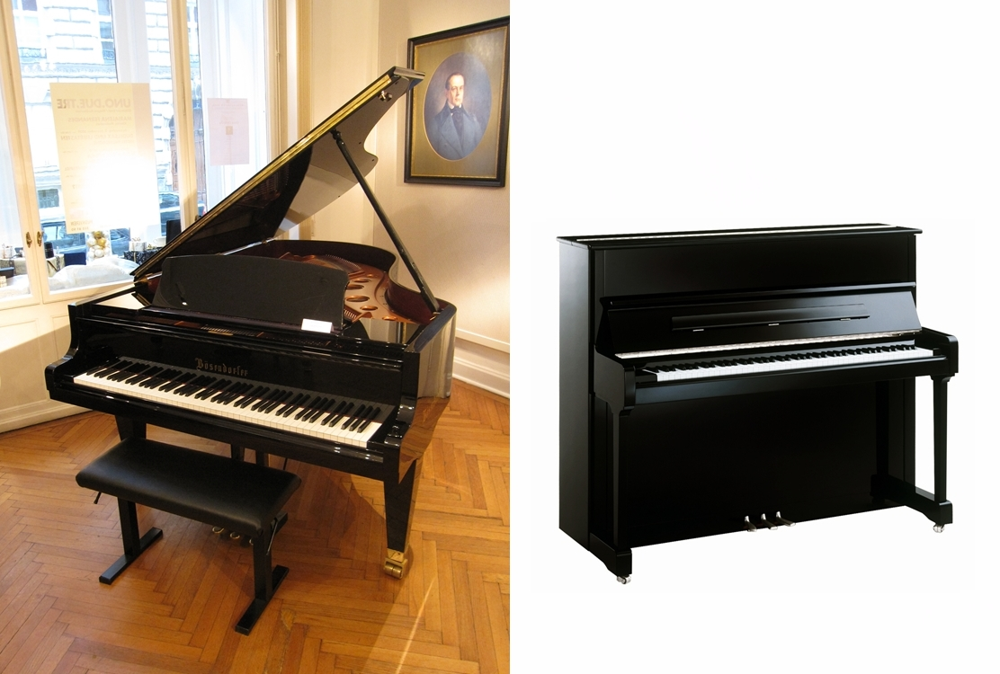

Ürünler
-

Kanun, Orta Doğu ve Kuzey Afrika'da yaygın olarak kullanılan bir telli çalgıdır. İsmi Arapça 'yasa ve yönetmek' manasındaki 'kanun' kelimesinden gelmektedir.
-

Keman (veya viyolon), viyola ve viyolonselin de bulunduğu violin ailesinin en yüksek tondan çalan, en küçük üyesidir. Dört teli vardır. Akort sesleri pesten tize sol, re, la ve mi'dir.
-

Flüt, yanlamasına çalınan, metalden ya da tahtadan yapılabilen bir üflemeli çalgıdır. Flüt ailesinin en yaygın türüdür, orkestralarda ve bandolarda sıkça kullanılır.
-

Piyano, İtalya'da Bartolomeo Cristofori tarafından 1700 yılı civarında icat edilmiş akustik, tuşlu bir müzik aletidir. Piyanoda ses, teller vasıtasıyla elde edilir.
-

Gitar, genellikle altı telli, ses perdeli müzik aletidir. Çalanın vücuduna karşı düz tutulur ve baskın el ile telleri tıngırdatarak çalarken aynı anda seçilen telleri ses perdelerine karşı elin parmaklarıyla bastırarak çalınır.